Ashgrove: The Hollow Hour
Press kit · everything here may be used in coverage, videos and streams.
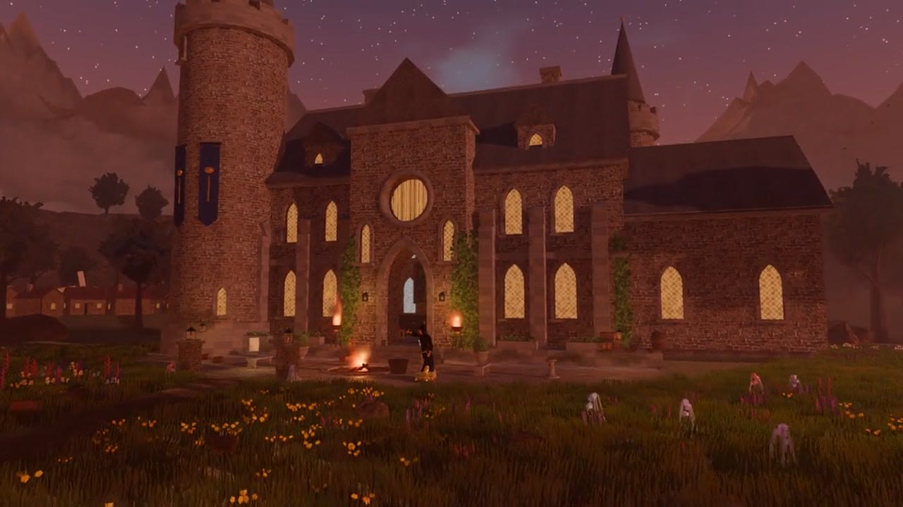
Fact sheet
- Developer
- Rowan Ashgrove (solo), South Africa
- Release
- 4 November 2026 (PC); Android added November 2026
- Version
- 1.3.0 (18 Nov 2026): realistic world and animals, Rowan remade, new icon. 1.2 added weather, fishing, companions, spoken voices and the undercroft
- Platforms
- Windows 10/11 · Android 10+
- Price
- Free demo (Prologue + Act I) · full game R20 / US$1.10
- Genre
- Single-player action RPG with runic magic, realistic look (painted look optional)
- Engine
- Godot 4
- Store
- itch.io
- Based on
- The Fivefold Grimoire and Ashgrove’s Origins, books by Rowan Ashgrove
Short description
Every clock in Hollowmere stopped at the same hour. As Rowan Ashgrove’s apprentice, learn magic drawn from the runes of the Elder Futhark, close the tears that let the Frayed into the world, and find out what the silence above Ashgrove Manor is keeping.
Long description
Ashgrove: The Hollow Hour is a single-player magic RPG set in the world of Rowan Ashgrove’s books. You arrive at Ashgrove Manor as an apprentice and find a village where every clock has stopped at the same hour, threads in the world that have begun to tear, and shades called the Frayed coming through them.
Magic is drawn from the runes of the Elder Futhark and from the practices in the books: a torch-light bolt, a held stream of fire, a thorn-rune shockwave, a ward of salt, a binding knot and a wakened vessel. Every working is cast through its own circle of runes. Spells cost Attention and build Strain; drop your Term for double power and pay for it in corruption.
Walk the village of Hollowmere, the town of Ashford, Stillwater Mere and the Whisperwood as the day turns to night. Trade with the shopkeepers, brew, gather herbs at their prime hours, take side quests from the villagers, and keep the Ledger that records everything you learn. Your robe gains gold runes as your craft grows, until it matches your mentor’s.
Features
- Runic spellcraft: six workings plus Kenaz bolts, Long Arm and Drawing Breath, each with its own magic circle
- A living world: village, town, lake, forest, pastures and animals, with a full day-night cycle
- Real-time combat with auto-aim, a dodge roll, telegraphed enemy attacks and enemies in three strengths
- A story in a Prologue and three acts, with side quests drawn from the Keeper stories
- A realistic look with real animals, soft light shafts and volumetric fog; the earlier painted look is still in Settings
- Plays on PC (keyboard and mouse or PS4 controller) and Android (touch controls built for phones)
- Accessibility: difficulty levels, remappable keys, UI and text size, field of view, and toggles for camera shake, flashes and vibration
- Photo mode
Short trailer (1.3)
20 s, vertical 9:16 · Watch on YouTube · Download the MP4
Trailer (1.2)
Version 1.2 trailer, 59 s, 1280×720 · Download the MP4
Screenshots
Click a picture for the full-size image.


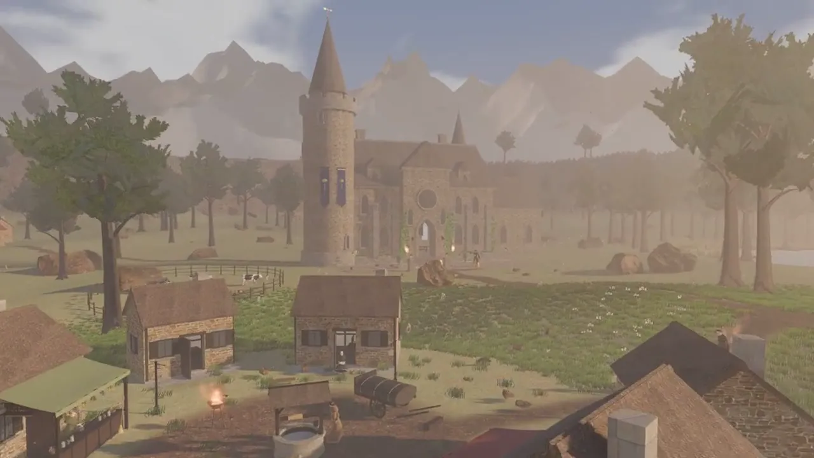

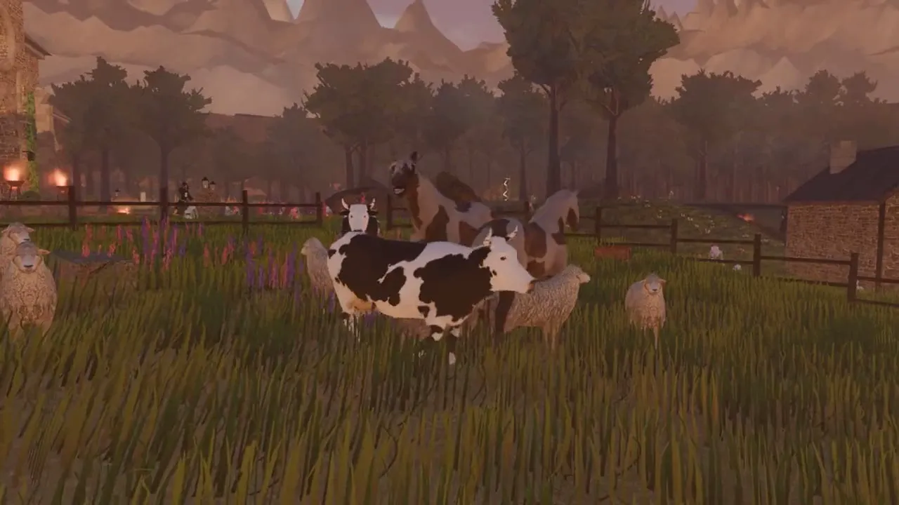

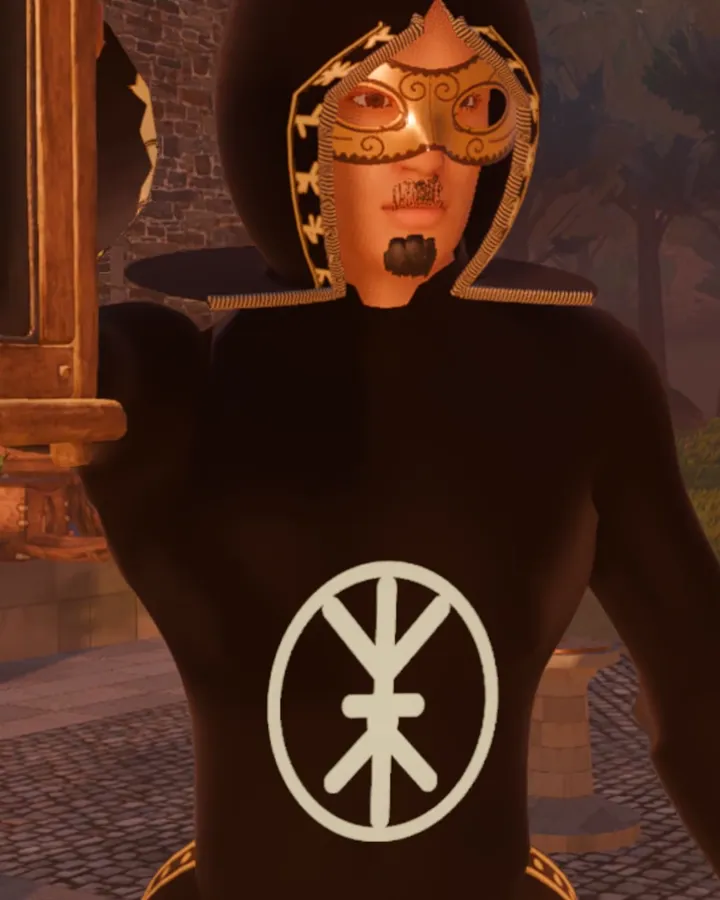

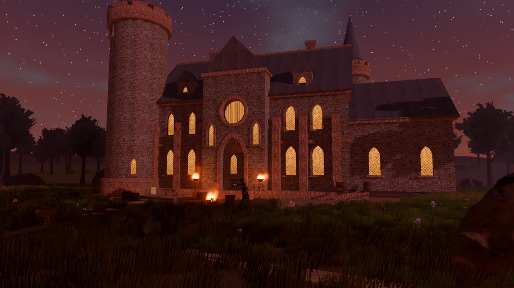

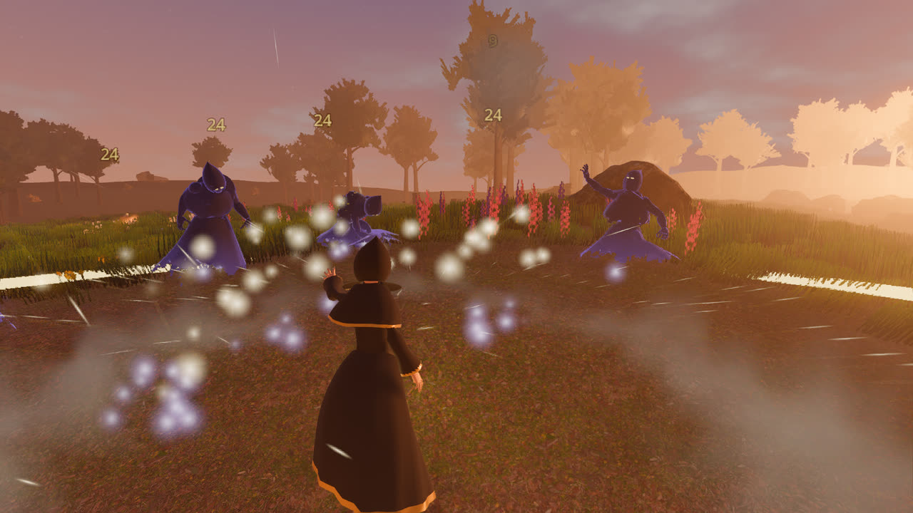

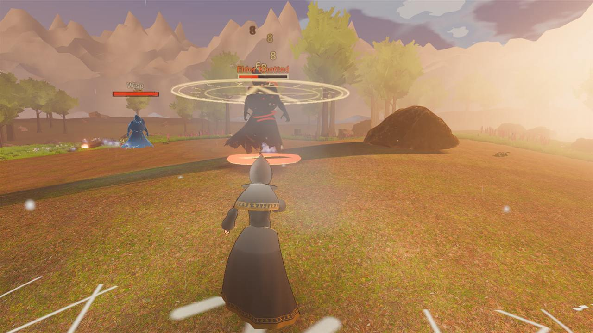

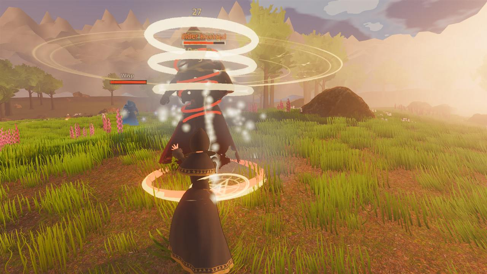

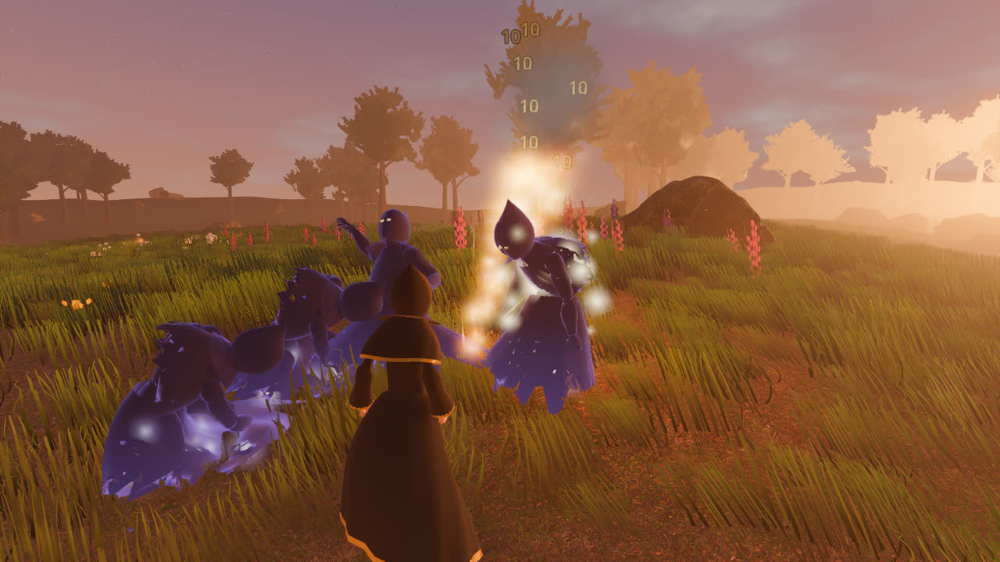

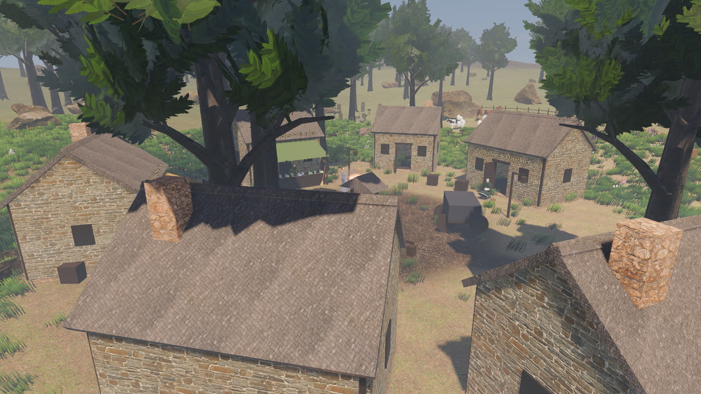

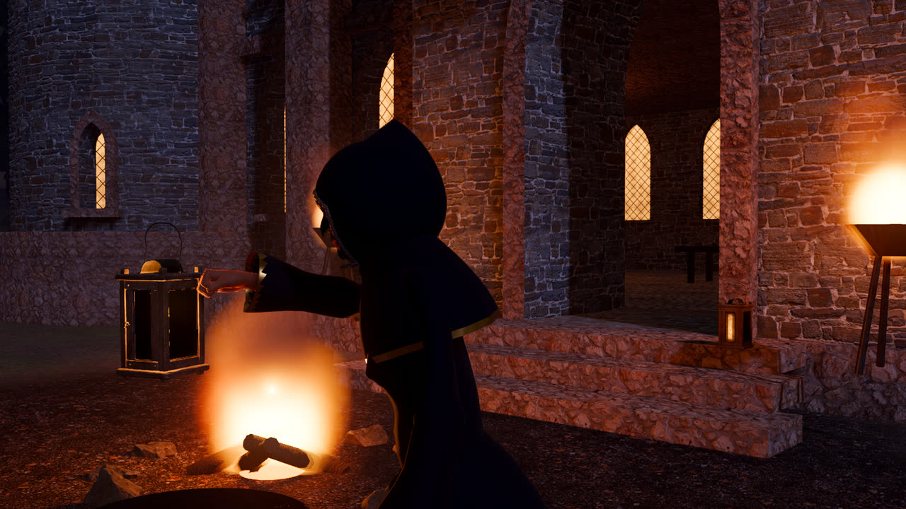

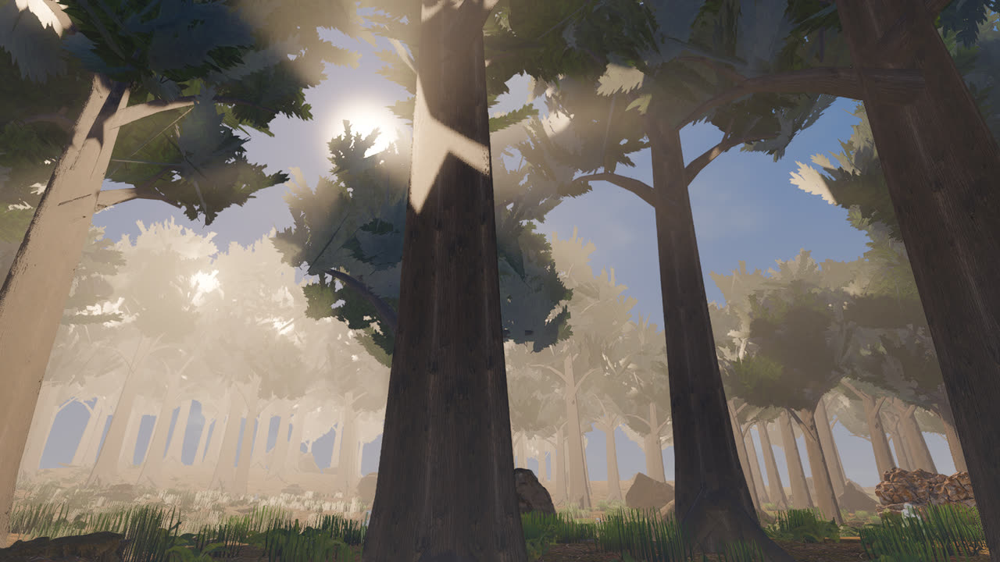

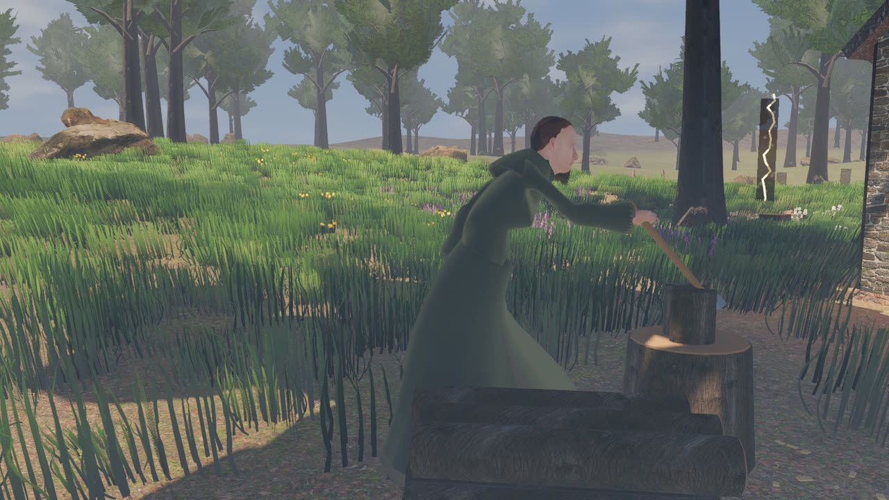

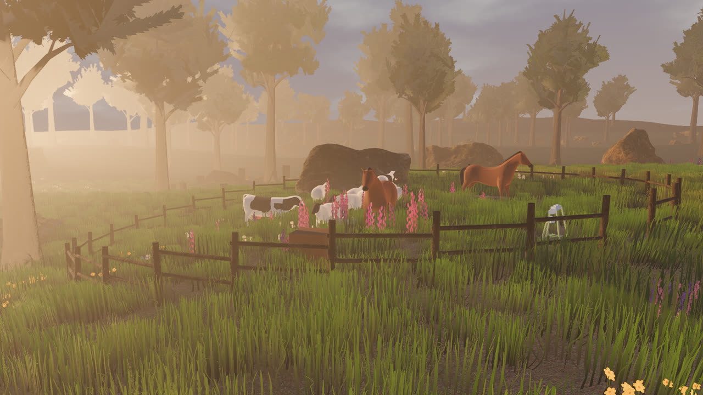

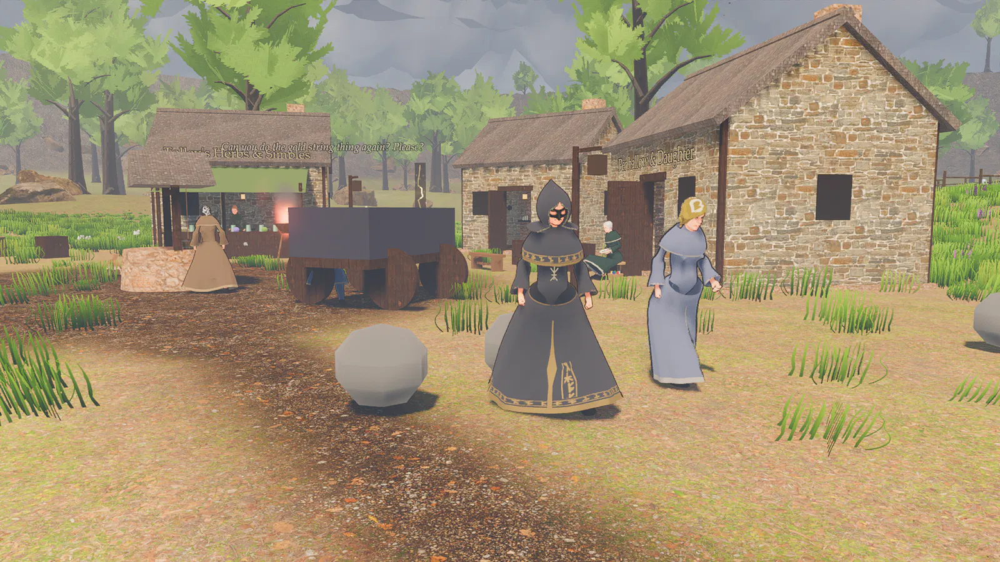

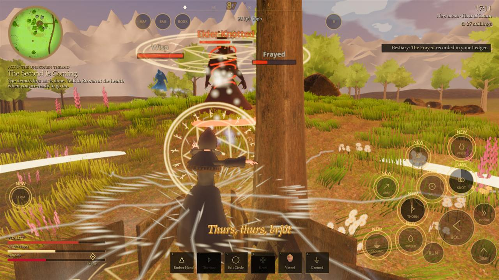
Credits
The realistic animals are CC BY 4.0 models; see the credits page.
Contact
For keys, interviews or questions, leave a comment on the itch.io page.